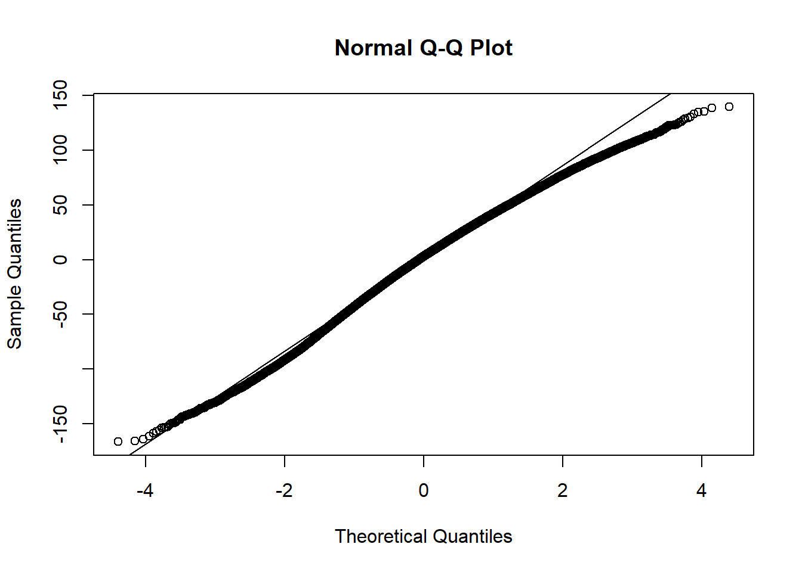
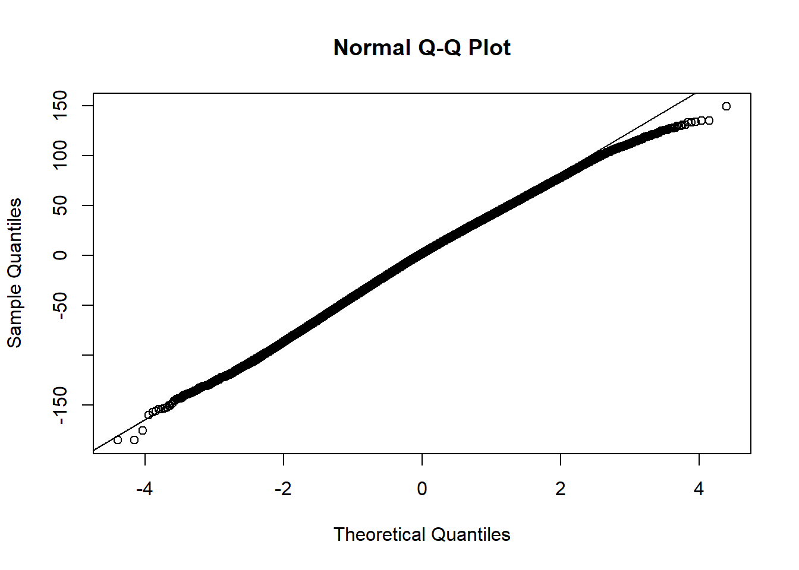

if (!require(pacman)) install.packages("pacman")
pacman::p_load(vroom,tidyverse,lme4,sjPlot,knitr)
setwd("C:/Users/User/Documents/GitHub/gradest-1/TCC/relatorio")Análise Multinível SAEB 2019
Sumário
Modelo Nulo
Adição de variáveis do primeiro nível (aluno)
Adição de variáveis do segundo nível (escola)
Adição de efeitos aleatórios do primeiro nível
Comparação entre modelos utilizando X²
Análise de resíduos
Definição do melhor modelo
Setup
Leitura dos dados
df_used <- vroom("df_used.csv")Modelos
Língua Portuguesa
Modelo 0
modelo_nulo_lp <- lmer(PROFICIENCIA_LP_SAEB ~ 1 + (1|ID_ESCOLA), data = df_used)
tab_model(modelo_nulo_lp, show.icc = TRUE, title="Modelo Nulo")| PROFICIENCIA_LP_SAEB | |||
|---|---|---|---|
| Predictors | Estimates | CI | p |
| (Intercept) | 263.41 | 262.72 – 264.10 | <0.001 |
| Random Effects | |||
| σ2 | 1974.18 | ||
| τ00 ID_ESCOLA | 221.02 | ||
| ICC | 0.10 | ||
| N ID_ESCOLA | 2499 | ||
| Observations | 89289 | ||
| Marginal R2 / Conditional R2 | 0.000 / 0.101 | ||
Modelo 1
modelo1_lp <- lmer(PROFICIENCIA_LP_SAEB ~ pont + TX_RESP_Q002 + escolaridade + TX_RESP_Q015 + (1|ID_ESCOLA), data = df_used)
tab_model(modelo1_lp, show.icc = TRUE, title="Modelo com adição de variáveis do primeiro nível")| PROFICIENCIA_LP_SAEB | |||
|---|---|---|---|
| Predictors | Estimates | CI | p |
| (Intercept) | 262.61 | 261.08 – 264.13 | <0.001 |
| pont | 0.07 | 0.03 – 0.11 | 0.001 |
| TX RESP Q002 [B] | -11.34 | -12.36 – -10.33 | <0.001 |
| TX RESP Q002 [C] | -6.06 | -6.75 – -5.37 | <0.001 |
| TX RESP Q002 [D] | -6.36 | -7.90 – -4.81 | <0.001 |
| TX RESP Q002 [E] | -13.38 | -15.43 – -11.34 | <0.001 |
| TX RESP Q002 [F] | -14.66 | -16.19 – -13.13 | <0.001 |
| escolaridade | 2.80 | 2.52 – 3.08 | <0.001 |
| TX RESP Q015 [B] | -25.13 | -25.95 – -24.31 | <0.001 |
| TX RESP Q015 [C] | -31.12 | -32.41 – -29.83 | <0.001 |
| Random Effects | |||
| σ2 | 1828.91 | ||
| τ00 ID_ESCOLA | 178.81 | ||
| ICC | 0.09 | ||
| N ID_ESCOLA | 2499 | ||
| Observations | 89289 | ||
| Marginal R2 / Conditional R2 | 0.077 / 0.159 | ||
Modelo 2
modelo2_lp <- lmer(PROFICIENCIA_LP_SAEB ~ pont + TX_RESP_Q002 + escolaridade + TX_RESP_Q015 + NSE_pont + ID_AREA + ID_LOCALIZACAO + (1|ID_ESCOLA), data = df_used)
tab_model(modelo2_lp, show.icc = TRUE, title="Modelo com adição de variáveis do segundo nível")| PROFICIENCIA_LP_SAEB | |||
|---|---|---|---|
| Predictors | Estimates | CI | p |
| (Intercept) | 219.57 | 213.26 – 225.89 | <0.001 |
| pont | 0.03 | -0.01 – 0.07 | 0.109 |
| TX RESP Q002 [B] | -11.11 | -12.12 – -10.10 | <0.001 |
| TX RESP Q002 [C] | -5.90 | -6.59 – -5.21 | <0.001 |
| TX RESP Q002 [D] | -6.22 | -7.76 – -4.68 | <0.001 |
| TX RESP Q002 [E] | -12.57 | -14.62 – -10.53 | <0.001 |
| TX RESP Q002 [F] | -14.44 | -15.96 – -12.91 | <0.001 |
| escolaridade | 2.67 | 2.39 – 2.95 | <0.001 |
| TX RESP Q015 [B] | -25.13 | -25.94 – -24.31 | <0.001 |
| TX RESP Q015 [C] | -31.08 | -32.37 – -29.79 | <0.001 |
| NSE pont | 9.70 | 8.77 – 10.64 | <0.001 |
| ID AREA | 4.94 | 3.50 – 6.38 | <0.001 |
| ID LOCALIZACAO | -6.70 | -8.62 – -4.79 | <0.001 |
| Random Effects | |||
| σ2 | 1828.68 | ||
| τ00 ID_ESCOLA | 134.74 | ||
| ICC | 0.07 | ||
| N ID_ESCOLA | 2499 | ||
| Observations | 89289 | ||
| Marginal R2 / Conditional R2 | 0.105 / 0.167 | ||
Modelo 3
modelo3_lp <- lmer(PROFICIENCIA_LP_SAEB ~ pont + TX_RESP_Q002 + escolaridade + TX_RESP_Q015 + NSE_pont + ID_AREA + ID_LOCALIZACAO + (TX_RESP_Q015|ID_ESCOLA), data = df_used)
tab_model(modelo3_lp, show.icc = TRUE, title="Modelo com adição de efeitos aleatórios do primeiro nível")| PROFICIENCIA_LP_SAEB | |||
|---|---|---|---|
| Predictors | Estimates | CI | p |
| (Intercept) | 220.56 | 214.27 – 226.86 | <0.001 |
| pont | 0.03 | -0.01 – 0.07 | 0.112 |
| TX RESP Q002 [B] | -11.10 | -12.11 – -10.09 | <0.001 |
| TX RESP Q002 [C] | -5.90 | -6.59 – -5.21 | <0.001 |
| TX RESP Q002 [D] | -6.23 | -7.77 – -4.68 | <0.001 |
| TX RESP Q002 [E] | -12.59 | -14.63 – -10.55 | <0.001 |
| TX RESP Q002 [F] | -14.41 | -15.94 – -12.88 | <0.001 |
| escolaridade | 2.67 | 2.39 – 2.95 | <0.001 |
| TX RESP Q015 [B] | -25.03 | -25.85 – -24.21 | <0.001 |
| TX RESP Q015 [C] | -31.01 | -32.38 – -29.65 | <0.001 |
| NSE pont | 9.49 | 8.56 – 10.43 | <0.001 |
| ID AREA | 4.87 | 3.44 – 6.30 | <0.001 |
| ID LOCALIZACAO | -6.65 | -8.56 – -4.75 | <0.001 |
| Random Effects | |||
| σ2 | 1825.98 | ||
| τ00 ID_ESCOLA | 142.81 | ||
| τ11 ID_ESCOLA.TX_RESP_Q015B | 4.67 | ||
| τ11 ID_ESCOLA.TX_RESP_Q015C | 47.36 | ||
| ρ01 | -1.00 | ||
| -0.15 | |||
| N ID_ESCOLA | 2499 | ||
| Observations | 89289 | ||
| Marginal R2 / Conditional R2 | 0.111 / NA | ||
Comparação entre modelos
kable(anova(modelo_nulo_lp, modelo1_lp))| npar | AIC | BIC | logLik | deviance | Chisq | Df | Pr(>Chisq) | |
|---|---|---|---|---|---|---|---|---|
| modelo_nulo_lp | 3 | 934438.6 | 934466.8 | -467216.3 | 934432.6 | NA | NA | NA |
| modelo1_lp | 12 | 927387.3 | 927500.1 | -463681.7 | 927363.3 | 7069.262 | 9 | 0 |
kable(anova(modelo1_lp, modelo2_lp))| npar | AIC | BIC | logLik | deviance | Chisq | Df | Pr(>Chisq) | |
|---|---|---|---|---|---|---|---|---|
| modelo1_lp | 12 | 927387.3 | 927500.1 | -463681.7 | 927363.3 | NA | NA | NA |
| modelo2_lp | 15 | 926914.9 | 927055.9 | -463442.4 | 926884.9 | 478.4421 | 3 | 0 |
kable(anova(modelo2_lp, modelo3_lp))| npar | AIC | BIC | logLik | deviance | Chisq | Df | Pr(>Chisq) | |
|---|---|---|---|---|---|---|---|---|
| modelo2_lp | 15 | 926914.9 | 927055.9 | -463442.4 | 926884.9 | NA | NA | NA |
| modelo3_lp | 20 | 926898.7 | 927086.7 | -463429.3 | 926858.7 | 26.18342 | 5 | 8.22e-05 |
Análise de resíduos (Modelos com efeitos aleatórios)
residuos_lp <- resid(modelo3_lp)
qqnorm(residuos_lp)
qqline(residuos_lp)
Matemática
Modelo 0
modelo_nulo_mt <- lmer(PROFICIENCIA_MT_SAEB ~ 1 + (1|ID_ESCOLA), data = df_used)
tab_model(modelo_nulo_mt, show.icc = TRUE)| PROFICIENCIA_MT_SAEB | |||
|---|---|---|---|
| Predictors | Estimates | CI | p |
| (Intercept) | 264.93 | 264.19 – 265.67 | <0.001 |
| Random Effects | |||
| σ2 | 1854.56 | ||
| τ00 ID_ESCOLA | 265.35 | ||
| ICC | 0.13 | ||
| N ID_ESCOLA | 2499 | ||
| Observations | 89289 | ||
| Marginal R2 / Conditional R2 | 0.000 / 0.125 | ||
Modelo 1
modelo1_mt <- lmer(PROFICIENCIA_MT_SAEB ~ pont + TX_RESP_Q002 + escolaridade + TX_RESP_Q015 + (1|ID_ESCOLA), data = df_used)
tab_model(modelo1_mt, show.icc = TRUE, title="Modelo com adição de variáveis do primeiro nível")| PROFICIENCIA_MT_SAEB | |||
|---|---|---|---|
| Predictors | Estimates | CI | p |
| (Intercept) | 253.32 | 251.81 – 254.83 | <0.001 |
| pont | 0.29 | 0.25 – 0.33 | <0.001 |
| TX RESP Q002 [B] | -8.88 | -9.87 – -7.89 | <0.001 |
| TX RESP Q002 [C] | -3.75 | -4.42 – -3.08 | <0.001 |
| TX RESP Q002 [D] | -4.93 | -6.43 – -3.43 | <0.001 |
| TX RESP Q002 [E] | -11.63 | -13.63 – -9.64 | <0.001 |
| TX RESP Q002 [F] | -9.29 | -10.78 – -7.80 | <0.001 |
| escolaridade | 3.11 | 2.83 – 3.38 | <0.001 |
| TX RESP Q015 [B] | -22.78 | -23.58 – -21.99 | <0.001 |
| TX RESP Q015 [C] | -25.66 | -26.91 – -24.41 | <0.001 |
| Random Effects | |||
| σ2 | 1727.28 | ||
| τ00 ID_ESCOLA | 213.60 | ||
| ICC | 0.11 | ||
| N ID_ESCOLA | 2499 | ||
| Observations | 89289 | ||
| Marginal R2 / Conditional R2 | 0.072 / 0.174 | ||
Modelo 2
modelo2_mt <- lmer(PROFICIENCIA_MT_SAEB ~ pont + TX_RESP_Q002 + escolaridade + TX_RESP_Q015 + NSE_pont + ID_AREA + ID_LOCALIZACAO + (1|ID_ESCOLA), data = df_used)
tab_model(modelo2_mt, show.icc = TRUE, title="Modelo com adição de variáveis do segundo nível")| PROFICIENCIA_MT_SAEB | |||
|---|---|---|---|
| Predictors | Estimates | CI | p |
| (Intercept) | 198.57 | 191.93 – 205.21 | <0.001 |
| pont | 0.26 | 0.22 – 0.30 | <0.001 |
| TX RESP Q002 [B] | -8.67 | -9.66 – -7.68 | <0.001 |
| TX RESP Q002 [C] | -3.61 | -4.28 – -2.94 | <0.001 |
| TX RESP Q002 [D] | -4.82 | -6.32 – -3.32 | <0.001 |
| TX RESP Q002 [E] | -10.96 | -12.95 – -8.97 | <0.001 |
| TX RESP Q002 [F] | -9.10 | -10.59 – -7.61 | <0.001 |
| escolaridade | 2.99 | 2.72 – 3.27 | <0.001 |
| TX RESP Q015 [B] | -22.77 | -23.57 – -21.98 | <0.001 |
| TX RESP Q015 [C] | -25.61 | -26.87 – -24.36 | <0.001 |
| NSE pont | 11.03 | 10.04 – 12.02 | <0.001 |
| ID AREA | 6.61 | 5.08 – 8.14 | <0.001 |
| ID LOCALIZACAO | -4.22 | -6.20 – -2.25 | <0.001 |
| Random Effects | |||
| σ2 | 1727.34 | ||
| τ00 ID_ESCOLA | 161.16 | ||
| ICC | 0.09 | ||
| N ID_ESCOLA | 2499 | ||
| Observations | 89289 | ||
| Marginal R2 / Conditional R2 | 0.110 / 0.186 | ||
Modelo 3
modelo3_mt <- lmer(PROFICIENCIA_MT_SAEB ~ pont + TX_RESP_Q002 + escolaridade + TX_RESP_Q015 + NSE_pont + ID_AREA + ID_LOCALIZACAO + (TX_RESP_Q015|ID_ESCOLA), data = df_used)
tab_model(modelo3_mt, show.icc = TRUE, title="Modelo com adição de efeitos aleatórios do primeiro nível")| PROFICIENCIA_MT_SAEB | |||
|---|---|---|---|
| Predictors | Estimates | CI | p |
| (Intercept) | 201.23 | 194.66 – 207.80 | <0.001 |
| pont | 0.26 | 0.22 – 0.30 | <0.001 |
| TX RESP Q002 [B] | -8.64 | -9.63 – -7.65 | <0.001 |
| TX RESP Q002 [C] | -3.60 | -4.27 – -2.93 | <0.001 |
| TX RESP Q002 [D] | -4.84 | -6.34 – -3.34 | <0.001 |
| TX RESP Q002 [E] | -10.98 | -12.97 – -9.00 | <0.001 |
| TX RESP Q002 [F] | -9.07 | -10.56 – -7.59 | <0.001 |
| escolaridade | 2.99 | 2.72 – 3.26 | <0.001 |
| TX RESP Q015 [B] | -22.70 | -23.50 – -21.90 | <0.001 |
| TX RESP Q015 [C] | -25.61 | -26.93 – -24.29 | <0.001 |
| NSE pont | 10.53 | 9.56 – 11.51 | <0.001 |
| ID AREA | 6.26 | 4.76 – 7.75 | <0.001 |
| ID LOCALIZACAO | -4.09 | -6.05 – -2.13 | <0.001 |
| Random Effects | |||
| σ2 | 1724.76 | ||
| τ00 ID_ESCOLA | 174.54 | ||
| τ11 ID_ESCOLA.TX_RESP_Q015B | 8.26 | ||
| τ11 ID_ESCOLA.TX_RESP_Q015C | 45.31 | ||
| ρ01 | -1.00 | ||
| -0.44 | |||
| N ID_ESCOLA | 2499 | ||
| Observations | 89289 | ||
| Marginal R2 / Conditional R2 | 0.116 / NA | ||
Comparação entre modelos
kable(anova(modelo_nulo_lp, modelo1_lp))| npar | AIC | BIC | logLik | deviance | Chisq | Df | Pr(>Chisq) | |
|---|---|---|---|---|---|---|---|---|
| modelo_nulo_lp | 3 | 934438.6 | 934466.8 | -467216.3 | 934432.6 | NA | NA | NA |
| modelo1_lp | 12 | 927387.3 | 927500.1 | -463681.7 | 927363.3 | 7069.262 | 9 | 0 |
kable(anova(modelo1_lp, modelo2_lp))| npar | AIC | BIC | logLik | deviance | Chisq | Df | Pr(>Chisq) | |
|---|---|---|---|---|---|---|---|---|
| modelo1_lp | 12 | 927387.3 | 927500.1 | -463681.7 | 927363.3 | NA | NA | NA |
| modelo2_lp | 15 | 926914.9 | 927055.9 | -463442.4 | 926884.9 | 478.4421 | 3 | 0 |
kable(anova(modelo2_mt, modelo3_mt))| npar | AIC | BIC | logLik | deviance | Chisq | Df | Pr(>Chisq) | |
|---|---|---|---|---|---|---|---|---|
| modelo2_mt | 15 | 922209.2 | 922350.2 | -461089.6 | 922179.2 | NA | NA | NA |
| modelo3_mt | 20 | 922173.0 | 922361.0 | -461066.5 | 922133.0 | 46.22994 | 5 | 0 |
Análise de resíduos (Modelos com efeitos aleatórios)
residuos_mt <- resid(modelo3_mt)
qqnorm(residuos_mt)
qqline(residuos_mt)